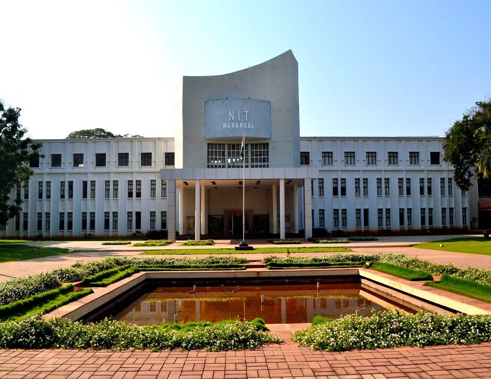
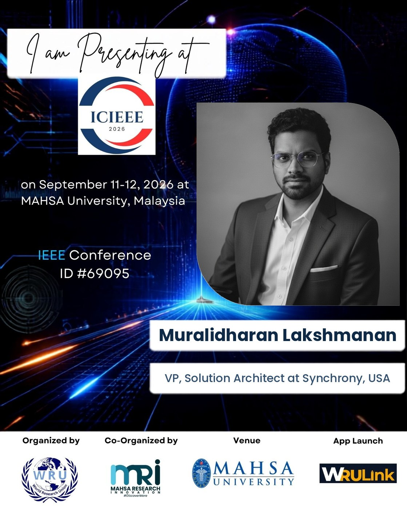
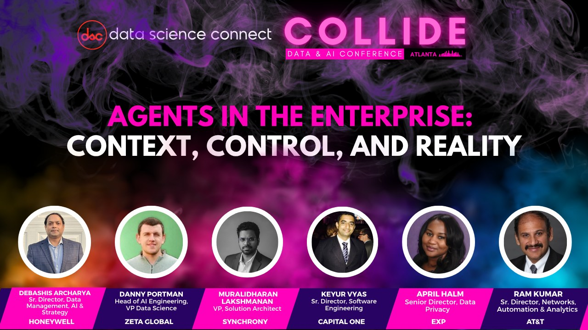
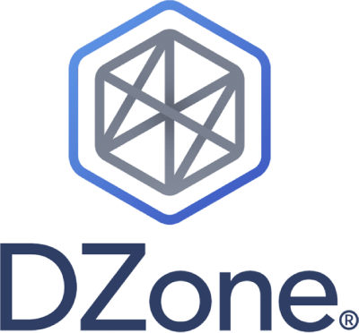
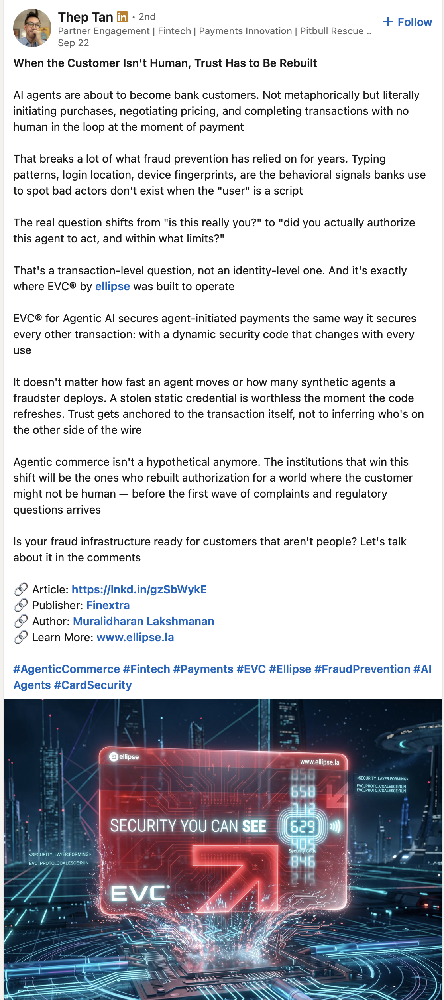
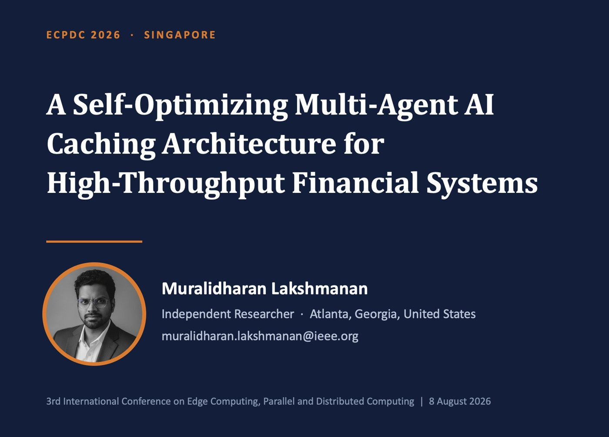
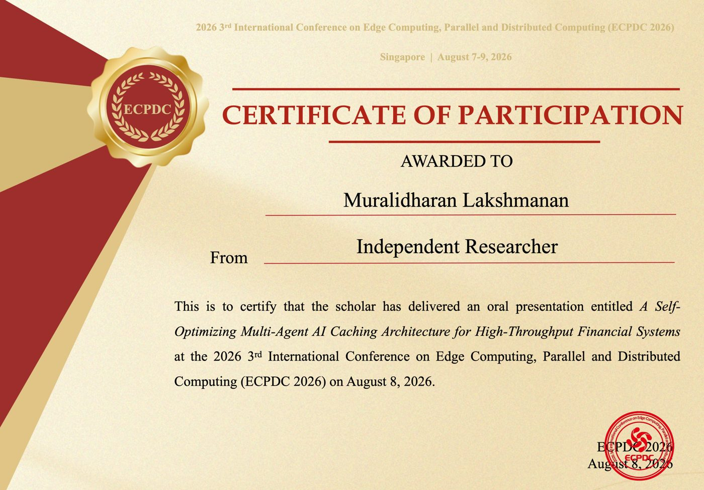
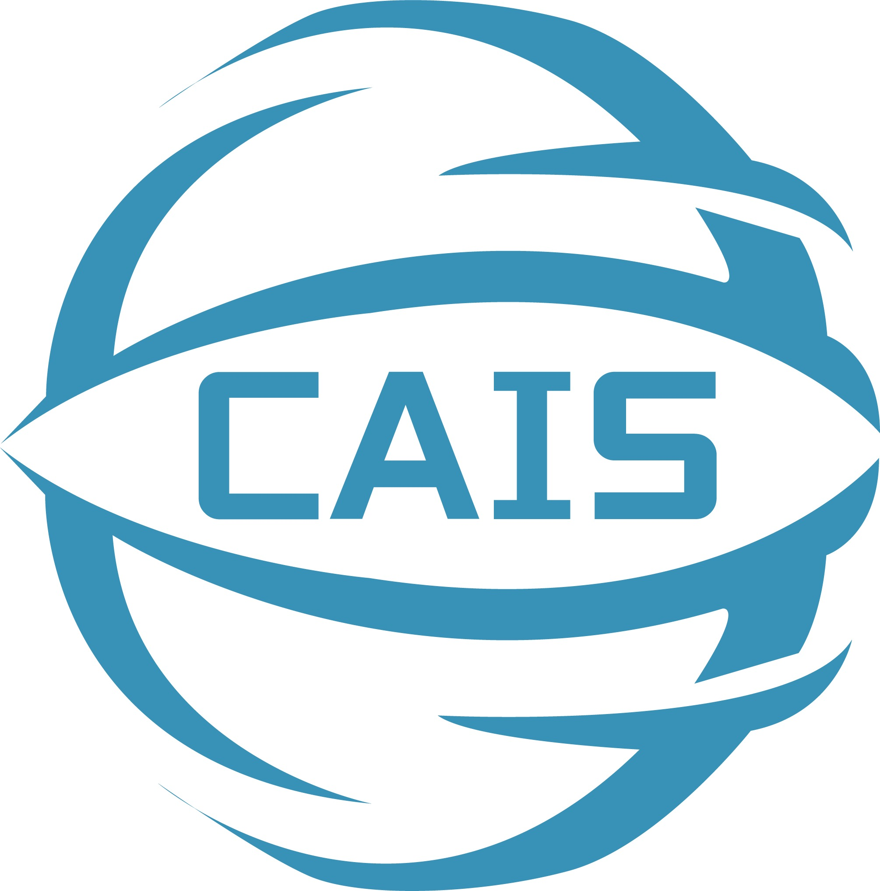
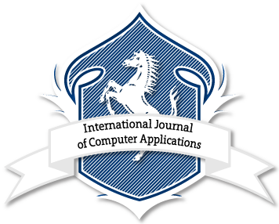
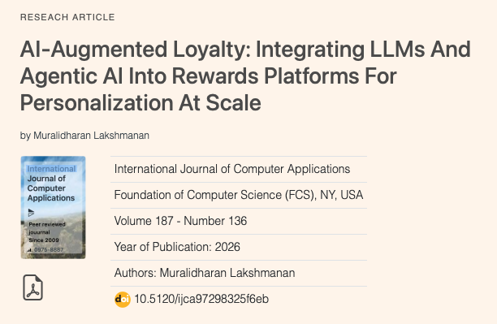

Public Influencer
Speaking, writing and academic service beyond a single employer.
Speaking

Add photoimages/cis-2026.jpgPhoto, keynote announcement or speaker profile
The Architecture of Intelligence: Engineering Resilient AI-Native Systems at Enterprise Scale
Covered independently by Zee News.
Needed: CIS 2026 / SCRS speaker page URLNeeded: Zee News article URLScreenshot of the Zee News article
Zee News coverage

Add photoimages/icieee-2026.jpgPhoto, speaker card or programme listing
ICIEEE-2026
Needed: ICIEEE-2026 programme or speaker listing URL
Add photoimages/collide-2026.jpgPanel announcement graphic
Agents in the Enterprise: Context, Control, and Reality
Panel with senior data and AI leaders from Honeywell, Zeta Global, Capital One, EXP and AT&T.
Needed: event recap or coverage linkWriting

Add photoimages/dzone-article.pngScreenshot of the DZone article header
AI Assist vs. AI Complete: The Real Gap in Most AI Workflows Today
Needed: URLScreenshot of the Finextra article header
Agentic Commerce Is Coming for Fintech's Human-First Assumptions
Needed: URLScreenshot of the series index
Caching architecture series
Series indexIndependent citation
The Finextra article has been cited independently by an industry professional, Thep Tan, in a LinkedIn post building his argument around the same thesis. This is unsolicited external validation that the thinking is shaping industry discussion of agent-initiated payment security.

Add photoimages/thep-tan-linkedin.pngScreenshot of Thep Tan's LinkedIn post (save it now)
Research

Add photoimages/ecpdc-2026.jpgTitle slide

Add photoimages/ecpdc-2026-certificate.jpgPresentation certificate
A Self-Optimizing Multi-Agent AI Caching Architecture for High-Throughput Financial Systems
Certificate (PDF) Needed: DOI / ACM DL link
Add photoimages/cais-2026.jpgAcceptance letter, programme or session photo
Multi-Agent Orchestration for Agentic Commerce: Coordinating Shopping, Payment, Rewards, and Fraud Agents in Real-Time Financial Transactions
Conference Needed: paper or proceedings link
Add photoimages/ijca-paper.pngJournal logo

Add photoimages/ijca-article.pngArticle page screenshot
AI-Augmented Loyalty: Integrating LLMs and Agentic AI into Rewards Platforms for Personalization at Scale
Read the paperPublic record
Evidence of this influence is publicly accessible across conference programmes and committee listings, published proceedings and journals, and articles on DZone, Finextra and Dev.to: a multi-platform public record independent of my employer. Fellowships, Technical Program Committee membership and peer-review certificates are on the Inspiration and Recognition page.
References
- ECPDC 2026 — 3rd International Conference on Edge Computing, Parallel and Distributed Computing
https://www.ic-ecpdc.org/ - Lakshmanan, M. AI-Augmented Loyalty. International Journal of Computer Applications 187(136), 16–21, Aug 2026. DOI 10.5120/ijca97298325f6eb
https://www.ijcaonline.org/archives/volume187/number136/ai-augmented-loyalty-integrating-llms-and-agentic-ai-into-rewards-platforms-for-personalization-at-scale/ - CAIS 2026 — International Conference on Artificial Intelligence and Simulation, Kuala Lumpur, 28–30 Sept 2026
https://www.ic-ais.net
- Link needed: CIS 2026 / SCRS speaker page
- Link needed: Zee News coverage
- Link needed: ICIEEE-2026 programme
- Link needed: DZone article
- Link needed: Finextra article
- Link needed: Thep Tan LinkedIn post
- Link needed: ECPDC paper DOI
- Link needed: CAIS 2026 paper or proceedings link